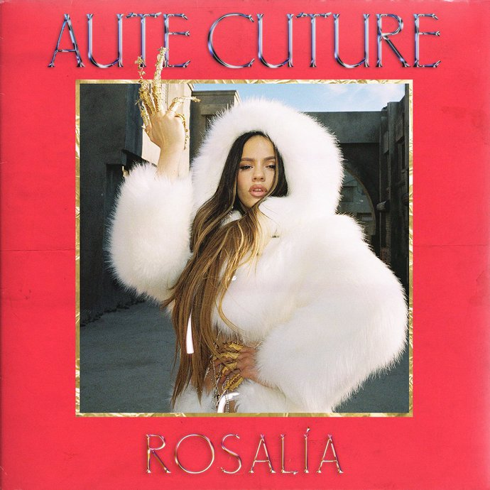

LISTEN
WATCH

Rosalia is a Spanish singer, songwriter and record producer. Initially known for her modern interpretations of flamenco music, Rosalía crossed language boundaries after receiving praise from international influencers and after several collaborations with artists such as J Balvin, Pharrell Williams, and James Blake.